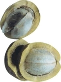

Capítulo 14 — Widget Tabs (Abas)
Abas básico
Implementação básica de um painel de abas.
Abacate
 O abacate é o pseudofruto comestível do abacateiro (Persea americana), uma árvore da família da laureáceas nativa do México ou da América do Sul, hoje extensamente cultivada em regiões tropicais, inclusive nas Ilhas Canárias e na Ilha da Madeira.
O abacate é o pseudofruto comestível do abacateiro (Persea americana), uma árvore da família da laureáceas nativa do México ou da América do Sul, hoje extensamente cultivada em regiões tropicais, inclusive nas Ilhas Canárias e na Ilha da Madeira.
O abacateiro cresce mais facilmente em solos leves, profundos, drenados e ligeiramente ácidos. As melhores condições climáticas são encontradas em regiões com chuvas em torno de 1 200 milímetros anuais.
São conhecidas mais de 500 variedades, de três origens diferentes: a guatemalteca, a antilhana e a mexicana. A parte comestível é a polpa verde-amarelada, de consistência mole, que envolve a grande semente.
Fonte: WikipediaAbacaxi
 Ananás ou abacaxi é uma planta monocotiledônea da família das bromeliáceas, subfamília Bromelioideae. Os abacaxizeiros cultivados pertencem à espécie Ananas comosus, que compreende muitas variedades frutíferas. Há também várias espécies selvagens, pertencentes ao mesmo gênero e grupo.
Ananás ou abacaxi é uma planta monocotiledônea da família das bromeliáceas, subfamília Bromelioideae. Os abacaxizeiros cultivados pertencem à espécie Ananas comosus, que compreende muitas variedades frutíferas. Há também várias espécies selvagens, pertencentes ao mesmo gênero e grupo.
O termo abacaxi (em português) é, com forte probabilidade, oriundo do tupi ibacati, 'bodum ou fedor de fruto', 'fruto fedorento' (ibá, 'fruto', cati, 'recender ou cheirar fortemente'), documentado já no início do séc. XIX.
O termo ananás (em português e espanhol) é do guarani naná, e documentado em português na primeira metade do séc. XVI e em espanhol na segunda (1578), em que é empréstimo do português do Brasil ou da sua língua geral. O termo abacaxi também é um termo ameríndio.
O fruto, quando maduro, tem o sabor bastante ácido e muitas vezes adocicado. Em culinária pode ser utilizado como um poderoso amaciante de carnes. Habitualmente usa-se a polpa da fruta, mas seu miolo e as cascas podem ser aferventadas para produção de sucos.
Fonte: WikipediaCupuaçu
Cupuaçu é o fruto de uma árvore originária da Amazônia brasileira (Theobroma grandiflorum; ex - Sterculiaceae), parente próxima do cacaueiro. A árvore é conhecida como cupuaçuzeiro, cupuaçueiro ou cupu, é uma fruta típica da amazônia brasileira, sobretudo no estado do Pará.
A árvore alcança uma média de 10 a 15 m de altura. Há referências de exemplares com até 20 m. As folhas são longas, medindo até 60 cm de comprimento e apresentam uma aparência ferruginosa na face inferior. As flores são grandes, de cor vermelho-escura e apresentam características interessantes: são as maiores do gênero, não crescem grudadas no tronco, como nas outras variedades de theobromáceas, mas sim nos galhos. Os frutos apresentam forma esférica ou ovóide e medem até 25 cm de comprimento, tendo casca dura e lisa, de coloração castanho-escura. As sementes ficam envoltas por uma polpa branca, ácida e aromática. Os frutos surgem de janeiro a maio e são os maiores da família. O cupuaçu contém ferro, fósforo e proteínas, necessários para a formação celular, participando dos processos químicos que permitem a continuação da vida.
Fonte: WikipediaLaranja
A laranja é o fruto produzido pela laranjeira (Citrus x sinensis), uma árvore da família Rutaceae. A laranja é um fruto híbrido, criado na antiguidade a partir do cruzamento do pomelo com a tangerina. O sabor da laranja varia do doce ao levemente ácido. Frequentemente, esta fruta é descascada e comida ao natural, ou espremida para obter sumo.
As pevides (pequenos caroços duros) são habitualmente removidas, embora possam ser usadas em algumas receitas. A casca exterior pode ser usada também em diversos pratos culinários, como ornamento, ou mesmo para dar algum sabor. A camada branca entre a casca e as gomas, de dimensão variável, raramente é utilizada, apesar de ter um sabor levemente doce. É recomendada para "quebrar" o sabor ácido da laranja na boca, após terminar de consumir o fruto.
Valor nutricional
Cada 100 gramas de laranja (Citrus x sinensis) contém:
- Calorias - 65kcal
- Proteínas - 0,6g
- Gorduras - 1g
- Vitamina A - 195 U.l.
- Vitamina B1 (Tiamina) - 135 µg
- Vitamina B2 (Riboflavina) - 150 µg
- Vitamina B3 (Niacina) - 0,25 mg
- Vitamina C (Ácido ascórbico) - 48 mg
- Cálcio - 45 mg
- Potássio - 36 mg
- Fósforo - 21 mg
- Sódio - 13 mg
- Enxofre - 11 mg
- Magnésio - 8 mg
- Cloro - 2 mg
- Silício - 0,45 mg
- Ferro - 0,2 mg
Tema: ui-lightness